공조냉동기계기사(구) (2006-03-05 기출문제)
1과목: 기계열역학
1. 고열원과 저열원 사이에서 작동하는 카르노(Carnot)사이클 열기관이 있다. 이 열기관에서 60 kJ의 일을 얻기 위하여 100 kJ의 열을 공급하고 있다. 저열원의 온도가 15℃라고 하면 고열원의 온도는?
- 128 ℃
- 720 ℃
- 288 ℃
- 447 ℃
(정답률: 48%)

2. 다음 그림과 같이 관으로 300 K, 1 MPa의 고압헬륨이 흐르고 있고, 단열용기는 비어 있다. 밸브를 열어서 헬륨이 유압되는데, 용기의 압력이 1 MPa에 이르면 밸브를 닫는다. 용기에 들어있는 헬륨의 최종온도는 얼마인가? (단, 헬륨의 정압비열과 정적비열은 각각 5.19 kJ/kg-K, 3.11 kJ/kg-K이다.)
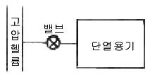
- 300 K
- 420 K
- 500 K
- 600 K
(정답률: 22%)
3. 압력 5 kPa, 체적이 0.3m3인 기체가 일정한 압력하에서 압축되어 0.2 m3로 되었을 때 이 기체가 한 일은? (단, +는 외부로 기체가 일을 한 경우이고, -는 기체가 외부로부터 일을 받은 경우)
- 500 J
- -500 J
- 1000 J
- -1 kJ
(정답률: 71%)
4. 다음 중 물질의 내부에너지가 아닌 것은?
- 분자운동에너지
- 위치에너지
- 화학에너지
- 핵에너지
(정답률: 44%)
5. 일정한 토크 100 Nm가 걸린 상태에서 회전하는 축이 있다. 이 축을 50 회전시키는데 필요한 일은 얼마인가?
- 5.0kW
- 5.0kJ
- 31.4 kW
- 31.4 kJ
(정답률: 30%)
6. 대기압이 752 mmHg 일 때, 계기 압력이 5.23MPa 인 증기의 절대 압력은 몇 MPa 인가?
- 3.02
- 4.12
- 5.33
- 6.43
(정답률: 70%)
7. 실린더에 밀폐된 8 kg의 공기가 그림과 같이 P1=800 kPa, 체적 V1=0.27m3에서 P2=350 kPa, 체적 V2=0.8m3으로 직선적으로 변화하였다. 이 과정에서 공기가 한 일은?
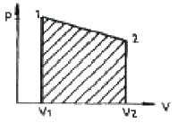
- 354.02 kJ
- 304.75 kJ
- 382.11 kJ
- 380.94 kJ
(정답률: 72%)
8. 비열이 일정한 이상기체가 비가역 과정으로 온도와 부피가 같이 2배로 증가했다. 비엔트로피의 변화는? (단 : Cp, Cv 는 각각 정압비열 및 정적비열을 표시한다.)
- CpIn2
- CvIn2
- Cp - Cv
- 알 수 없음
(정답률: 55%)
9. 어떤 용기내(체적일정)의 유체는 기계적으로 교란되면서 19 kJ의 일을 받아 들이면서 167 kJ의 열을 흡수한다. 내부에너지의 변화는 약 몇 kJ인가?
- 148
- 186
- -148
- -186
(정답률: 59%)
10. 이상디젤사이클에 대한 설명으로 옳지 않은 것은?
- 두 개의 등엔트로피 과정이 포함되어 있다.
- 압축착화기관의 이상 사이클이다.
- 한 개의 등압과정과 한 개의 등온과정이 포함되어 있다.
- 압축비가 동일 할 때 이상오토사이클 보다 열효율이 낮다.
(정답률: 40%)
11. 다음의 열역학 상태량 중 종량적 상태량은?
- 압력
- 체적
- 온도
- 밀도
(정답률: 80%)
12. 한 계가 300K의 대기로 2100 kJ의 열량을 방출하면서 온도가 800K에서 500K로 떨어지고 엔트로피는 3kJ/K 만큼 증가하였다. 이 2100 kJ의 열량 중 유효에너지는?
- 2100 kJ
- 1200 kJ
- 900 kJ
- 0 kJ
(정답률: 31%)
13. 어느 완전가스가 등온하에서 외부에 대하여 상태1에서 상태 2까지 627.7 kJ의 일을 하였다. 이 일을 열량으로 환산하면?
- 200kcal
- 300kcal
- 150kcal
- 2500kcal
(정답률: 46%)
14. 실린더 내의 공기가 100 kPa, 20℃상태에서 300kPa이 될 때까지 가역단열 과정으로 압축된다. 이 과정 중 공기의 엔트로피의 변화는? (단, 공기의 비열비 k = 1.4 이다.)
- -1.35 kJ/kgK
- 0 kJ/kgK
- 1.35 kJ/kgK
- 13.5 kJ/kgK
(정답률: 30%)
15. 이상적 흡수냉동기의 작동을 위해 두 열원이 있다. 고열원이 100℃이고, 저열원이 50℃이라면 성능계수는?
- 1.00
- 2.00
- 4.25
- 6.46
(정답률: 71%)
16. 이상적인 역 카르노 냉동사이클에서 응축온도가 330 K, 증발온도가 270 K이면 성능계수는 얼마인가?
- 2.7
- 3.3
- 4.5
- 5.4
(정답률: 69%)
17. 여름철 냉방으로 인한 전력 부하 상승은 발전 시스템에 큰 부담이 되고 있다. 이러한 관점에서 천연가스를 열원으로 사용하는 흡수식 냉동기에 관심이 집중되고 있다. 흡수식 냉동기에 대한 다음 설명 중 잘못된것은?
- 일반적으로 암모니아를 냉매로 사용한다.
- 액체를 가압하므로 소요되는 일이 매우 적다.
- 증기 압축 냉동기에 비해 더 많은 정비가 필요하므로 장치가 복잡하다.
- 흡수기에서 열을 발생시키기 위하여 열원이 필요하다.
(정답률: 40%)
18. 대기 1kg의 성분을 산소(R = 0.2598 kJ/kgK) 0.232kg, 질소(R = 0.2969 kJ/kgK) 0.768 kg 이라고 가정할 때 이 대기의 기체상수(kJ/kgK)는?
- 0.274
- 0.288
- 1.536
- 1.723
(정답률: 46%)
19. 냉동기의 성능계수를 높이는 것이 아닌 것은?
- 증발기의 온도를 높인다.
- 증발기의 온도를 낮춘다.
- 압축기의 효율을 높인다.
- 증발기와 등축기에서 마찰압력손실을 줄인다.
(정답률: 52%)
20. 밀폐 시스템의 가역 정압 변화에 관한 다음 사항중 올바른 것은? (단, u : 내부에너지, Q : 전달열, h : 엔탈피, v : 비체적, W : 일 이다.)
- d u = δ Q
- d h = δ Q
- d v = δ Q
- d W = δ Q
(정답률: 71%)
2과목: 냉동공학
21. 일반적으로 가정 냉장고용 압축기에서 하우징 내의 압력은 다음 중 어느 것인가?
- 증발기 내의 압력
- 흡입압력
- 토출압력
- 응축압력
(정답률: 53%)
22. 일원 냉동사이클과 이원 냉동사이클과의 가장 큰 차이점은?
- 압축기의 대수
- 증발기의 수
- 냉동장치내의 냉매 종류
- 중간냉각기의 유무(有無)
(정답률: 61%)
23. 제상방식에 대한 설명이다. 옳지 않은 것은?
- 살수방식은 저온의 냉장창고용 공기냉각기 등에서 많이 사용된다.
- 부동액 살포방식은 공기중의 수분이 부동액에 흡수되므로 일정한 농도 관리가 필요하다.
- 핫가스 제상방식은 응축기 출구의 고온의 액냉매를 이용한다.
- 전기히터방식은 냉각관 배열의 일부에 핀 튜브 형태의 전기히터를 삽입하여 착상부를 가열한다.
(정답률: 74%)
24. 다음의 만액식 냉동사이클 선도에서 냉매순환량을 G라 하면 증발기 냉동능력(Qe)은?
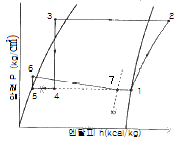
- Qe = G(h7 - h4)
- Qe = G(h7 - h5)
- Qe = G(h1 - h4)
- Qe = G(h1 - h5)
(정답률: 52%)
25. 이원 냉동장치의 설명으로 옳지 않은 것은?
- 증발온도 -70℃ 이하의 초저온 냉동기에 적합하다.
- 저단압축기 토출냉매의 과냉각을 위해 압축기 출구에 중간냉각기를 설치한다.
- 저온측 냉매는 고온측 냉매보다 비등점이 낮은 냉매를 사용한다.
- 팽창탱크를 설치한다.
(정답률: 46%)
26. 냉동기유의 구비조건으로 옳지 않은 것은?
- 적당한 점도를 가질 것
- 응고점이 높아 저온에서도 유동성이 있을 것
- 쉽게 산화하거나 열화하지 않을 것
- 냉매나 수분, 공기 등이 쉽게 용해되지 않을 것
(정답률: 87%)
27. 벽체의 구조가 두께 20cm의 콘크리트이고 내면에 석고 플라스터 두께 0.5cm를 대었다. 벽체의 면적 50m2을 통하여 실내로 1시간당 침입하는 열량은? (단, 외기 온도 35℃, 실내온도 26℃, 외기 및 실내 공기의 열전달율은 각각 20kal/m2℃, 8kal/m2h℃이고 석고 플라스터 및 콘크리트의 열전도율은 각각 0.5kal/mh℃, 1.3kal/mh℃이다.)
- 438kal/h
- 875kal/h
- 1025kal/h
- 1328kal/h
(정답률: 56%)
28. 플로우트 스위치를 설치할 장소로 옳은 것은?
- LPS와 조합하여 unloder 용으로 설치
- 수액기 출구 스톱밸브와 팽창밸브 사이의 액관
- 냉매유량 확보를 위한 응축기에 설치
- 액분리기에 설치
(정답률: 25%)
29. 냉각수 입출구의 온도차가 7℃ 냉각면적이 12m2, 냉각수량이 250ℓ/min, 그리고 냉매와 냉각수와의 평균 온도차가 8℃일 때 이 수냉 음축기의 열통과율은 얼마인가?
- 730 km/m2h℃
- 850 km/m2h℃
- 890 km/m2h℃
- 1094 km/m2h℃
(정답률: 48%)
30. 다음 중 전자밸브(Solenoid Valve)의 사용 목적이 아닌 것은?
- 용량조절
- 액면조정
- 리퀴드 백 방지
- 외기침입 방지
(정답률: 69%)
31. 냉동사이클에서 응축온도 상승에 의한 영향과 가장 거리가 먼 것은?
- COP감소
- 압축기 토출가스 온도 상승
- 압축비 증가
- 압축비 흡입가스 압력 상승
(정답률: 74%)
32. 나선상의 관에 냉매를 통하고 그 나선관을 원형 또는 구형의 수조에 담그고, 물을 순환시켜서 냉각하는 방식의 응축기는 다음 중 어느 것인가?
- 대기식 응축기
- 이중관식 응축기
- 지수식 응축기
- 증발식 응축기
(정답률: 77%)
33. 다음은 냉동기를 설명한 내용이다. 맞는 것은?
- 열에너지를 기계적 에너지로 변환시키는 것이다.
- 요구되는 소정의 장소에서 열을 흡수하여 다른 장소에 열을 발산하도록 기계적 에너지를 사용한 것이다.
- 높은 온도에서 열을 흡수하며 낮은 온도 장소에 열을 발산하도록 기계적 에너지를 사용한 것이다.
- 증기 원동기와 비슷한 원리이며 외연기관이다.
(정답률: 56%)
34. 스크류 압축기의 특징이 아닌 것은?
- 동일 용량의 왕복동 압축기에 비하여 소형 경량으로 설치면적이 작다.
- 장시간의 연속운전이 가능하다.
- 냉매의 압력 손실이 없어 체적효율이 향상된다.
- 오일펌프를 설치하지 않는다.
(정답률: 67%)
35. 냉동기에 사용되는 작동 유체인 냉매는 일반적으로 비체적이 적은 것이 요구된다. 그러나 냉매의 비체적이 어느 정도 큰 것을 채용하는 냉동기는 다음 중 어느 것인가?
- 회전식
- 흡수식
- 왕복동식
- 터보(원심식)
(정답률: 72%)
36. 10 US RT는 몇 kcal/h인가?
- 3024
- 3320
- 33200
- 30240
(정답률: 64%)
37. 핀(fin)이 없는 공기냉각기에 있어서 냉각관 외면에는 서리가 4mm부착되어 있다. 이 경우 냉각관의 열통과율(kcal/m2h℃)은 약 얼마인가? (단, 냉각관의 두께, 서리의 두께에 의한 면적증가와 관의 열저항은 무시한다. 또한 공기측 열전달율 αa = 8kcal/m2℃, 냉매측 열전달율 αr = 600kcal/m2h℃ 서리의 열전도율 λ = 0.2kcal/m h℃ 이다.)
- 6.8
- 7.1
- 7.5
- 8.3
(정답률: 65%)
38. 다음 압력 스위치 중 연결부위의 압력이 소정의 압력 이하가 되었을 때 작동되는 것은?
- 고압스위치
- 플로트스위치
- 저압스위치
- 고액면스위치
(정답률: 82%)
39. 비스무트, 텔루르비스무트, 셀렌이라는 반도체를 이용하여 냉각작용을 유도하는 냉동장치는?
- 공기팽창 냉동장치
- 진공 냉각식 냉동장치
- 증기 분사식 냉동장치
- 열전 냉동장치
(정답률: 75%)
40. 수브라인 냉각장치에서 수브라인측과 응축기 냉각수측과의 수온 및 수량을 측정하였더니 아래와 같았다. 이 장치의 성적계수는? (단, 열손실은 무시한다)
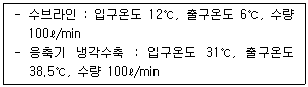
- 2.5
- 3.0
- 3.5
- 4.0
(정답률: 56%)
3과목: 공기조화
41. 다음은 감습방법을 나타낸 것이다. 이들 중 공기조화에서 가장 일반적으로 쓰이고 있는 방법은?
- 압축 감습
- 흡수식 감습
- 흡착식 감습
- 냉각 감습
(정답률: 46%)
42. 다음 가습 방법 중 수(木)분무식이 아닌 것은?
- 원심식
- 초음파식
- 분무식
- 적외선식
(정답률: 77%)
43. 덕트 시공에서 올바르지 않은 것은? (단, R은 곡율 반경이고, W는 덕트의 폭이다.)
- 덕트의 아스펙트 비는 4 이내로 한다.
- 굽힘부분은 되도록 큰 곡율반경을 취한다.
- 덕트 확대각도는 15도(고속덕트에서는 8도)이하, 축소각도는 30도(고속덕트에서는 15도) 이내로 한다.
- 덕트의 굴곡부에서 R/W가 2.0 이상일 때에는 가이드 배인을 설치한다.
(정답률: 50%)
44. 실내공기와 급기와의 사이에서 허용될 수 있는 취출온도차에 직접적인 영향을 주는 것이 아닌 것은?
- 취출구의 유인비
- 1차공기의 기류 도중에 있는 장애물
- 천정높이
- 취출속도
(정답률: 39%)
45. 각 구간의 풍량에 따른 풍속의 정압증가를 고려하여 각 취출구에서의 정압이 같아지도록 하는 덕트설계방법을 무엇이라 하는가?
- 등속법
- 정압법
- 정압재취득법
- 전압법
(정답률: 45%)
46. 증기배관에 관한 다음 설명 중 옳지 않은 것은?
- 증기 주관의 말단에는 트랩장치를 한다.
- 증기배관의 도중에 사용하는 밸브는 되도록 글로우브밸브를 사용한다.
- 진공펌프를 사용하지 않을 경우는 방열기나 배관중의 적당한 곳에 공기배출용 밸브를 설치한다.
- 증기배관은 열팽창에 의한 응력이 걸리지 않도록 주의한다.
(정답률: 56%)
47. 천정높이 12m인 강당의 경우 증기난방설계시 적합한 실내평균 온도는? (단, 바닥에서 1.5m의 온도는 18℃로 한다.)(오류 신고가 접수된 문제입니다. 반드시 정답과 해설을 확인하시기 바랍니다.)
- 13℃
- 15℃
- 26℃
- 38℃
(정답률: 59%)
48. 보일러의 출력에는 사용출력과 정격출력이 있다. 다음 중 이들의 관계가 적당한 것은?
- 상용출력 = 난방부하 + 보일러 예열부하
- 정격출력 = 난방부하 + 배관 열손실부하
- 상용출력 = 배관 열손실부하 + 보일러 예열부하
- 정격출력=난방부하+급탕부하+배관 열손실부하+보일러 예열부하
(정답률: 70%)
49. 난방설비의 분류에서 간접 난방법에 속하는 것은?(오류 신고가 접수된 문제입니다. 반드시 정답과 해설을 확인하시기 바랍니다.)
- 증기난방
- 온풍난방
- 온수난방
- 복사난방
(정답률: 77%)
50. 실내를 쾌적한 상태로 유지하기 위하여 여러 가지의 공조방식을 채용할 수 있는데, 그 중에서 실내에서의 잠열부하처리에 곤란한 공조방식은?
- 단일덕트 정풍량방식
- 각층유닛방식
- 팬코일유닛방식
- 패케이지방식
(정답률: 41%)
51. 진공 환수식 증기난방 배관에 관한 사항 중 옳지 않은 것은?
- 방열기는 보일러보다 항상 높은 위치에 있어야 한다.
- 환수관 말단에 진공펌프를 설치하여 환수한다.
- 진공펌프에서 응축수 내의 공기를 배출한다.
- 환수관의 관경을 작게 취할 수 있다.
(정답률: 44%)
52. 어느 방의 냉방부하를 계산하고 결과를 공기선도에 표시하였다. 송풍 공기량이 9800 m3/h, 비체적이 0.86m3/kg일 경우 외기에 대한 냉방부하는 얼마인가?
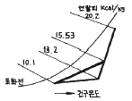
- 53,210kcal/h
- 35,320kcal/h
- 22,830kcal/h
- 26,550kcal/h
(정답률: 30%)
53. 어떤 건물에 공기조화 설비를 하고자 한다. 공기조화 방식을 결정하는데 있어서 우선적으로 고려할 사항이 아닌 것은?
- 건물의 용도와 규모
- 요구되는 실내환경 조건
- 사용할 열매의 종류
- 건물내부의 사용 상황
(정답률: 50%)
54. 단열된 용기에 물을 넣고, 건구온도와 상대습도가 일정한 실내에 방치해 두면 실내는 포화상태에 도달하게 된다. 이 때 물의 온도는 결국 공기의 어떤 상태에 가까워지는 변화를 하는가?
- 건구온도
- 습구온도
- 노점온도
- 절대온도
(정답률: 52%)
55. 실내 필요 환기량을 구하는 식은? (단, Q : 필요 환기량, M : 오염물 발생량, KP : 실내오염 허용치, KO: 오염발생전의 실내농도)
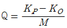
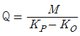
- Q = M(KP - KO)
- Q = M + (KP - KO)
(정답률: 58%)
56. 다음 중 덕트의 굴곡부 등에서 덕트내를 흐르는 기류를 안정시키기 위해 사용되는 것은?
- 스플리트 댐퍼
- 가이드 베인
- 버터플라이 댐퍼
- 루버댐퍼
(정답률: 71%)
57. 흡수식 냉동기에 대한 설명 중 잘못된 것은?
- 흡수제는 리튬 브로마이드(LiBr), 냉매는 물(H2O)의 조합으로 이루어진다.
- 발생기에는 증기에 의한 가열이 이루어진다.
- 냉매는 리튬 브로마이드(LiBr), 흡수제는 물(H2O)의 조합으로 이루어진다.
- 흡수기에서는 냉각수를 사용하여 냉각시킨다.
(정답률: 65%)
58. 900W의 형광등 밑에서 20명이 사무를 보고 있는 사무실의 전 발생열량은 얼마인가? (단, 1인당 인체의 발생열량은 현열 50kcal/h, 잠열 42kcal/h, 그리고 형광등은 1kW당 발열량 1000kcal/h로 한다.)
- 1880kcal/h
- 2150kcal/h
- 2740kcal/h
- 3780kcal/h
(정답률: 60%)
59. 다음 중 전공기식 공기조화 방식이 아닌 것은?
- 변풍량 단일덕트 방식
- 이중 덕트 방식
- 각종 유니트 방식
- 홴코일 유니트 방식 (덕트병용)
(정답률: 60%)
60. 다음 그림에 대한 기술 중 틀린 것은?
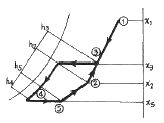
- ⑤의 공기는 취득열량 G(h2-h5)를 얻어 공기상태 ②로 된다.
- 실내 공기 ②와 옥외공기가 혼합되면 ③의 상태로 되고 이때 G(h3-h2)를 외기부하라 한다.
- 혼합공기 ③을 냉각코일에 통과시키면 상대습도 95%선을 따라 냉각 가습되어 ④에 이른다.
- ④의 공기를 재열코일에 통과시키면 재열부하 G(h5-h4)얻어 ⑤의 상태로 취출구를 나온다.
(정답률: 44%)
4과목: 전기제어공학
61. 제너다이오드회로에서 V1=20sinωt[V], V2=5V, RL ＜ Rs일 때 V2의 파형으로 옳은 것은?
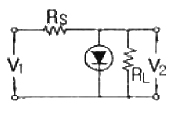
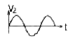
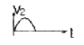
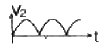
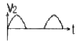
(정답률: 48%)
62. 절연저항을 측정하기 위해 사용되는 계측기는?
- 메거
- 휘스톤브리지
- 켈빈브리지
- 저항계
(정답률: 59%)
63. 제어계에서 제어기의 전달함수가 G(s) = Kp(1+TdS)로 주어질 때 이에 대한 설명으로 틀린 것은?
- 이 제어기는 비례-미분 제어기이다.
- 이 제어기는 진상보상요소이다.
- 이 제어기는 정상편차는 없다.
- Kp는 비례감도, Td 는 미분시간을 나타낸다.
(정답률: 57%)
64. 정전용량이 각각 C1, C2 그 사이의 상호유도계수가 M인 절연된 두 도체가 있다. 이 두 도체를 가는 선으로 연결할 경우 그 정전용량은?
- C1+C2-M
- C1+C2+M
- C1+C2+2M
- 2C1+2C2+M
(정답률: 36%)
65. RLC 병렬회로에서 용량성 회로가 되기 위한 조건은?
- XL = XC
- XL ＞ XC
- XL ＜ XC
- XL + XC = 0
(정답률: 50%)
66. 그림과 같은 논리회로의 출력 XO에 해당하는 것은?(오류 신고가 접수된 문제입니다. 반드시 정답과 해설을 확인하시기 바랍니다.)
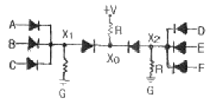
- (ABC)+(D+E+F)
- (A+B+C)+(D+E+F)
- (A+B+C)(D+E+F)
- (ABC)+(DEF)
(정답률: 4%)
67. 그림과 같은 블록선도에서 X3/X1을 구하면?
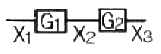
- G1 + G2
- G1 ㆍ G2
- G1 - G2
- G1 / G2
(정답률: 53%)
68. 유도전동기의 기동방식 중 권선형에만 사용할 수 있는 방법은?
- 2차회로의 저항 삽입
- 리액터기동
- Y-Δ기동
- 기동보상기 사용
(정답률: 20%)
69. 피드백 제어계에서 전압, 전류, 주파수, 회전속도 등 전기적 및 기계적 양을 주로 제어하는 것으로 응답 속도가 대단히 빠른 것을 특징으로 하는 것은?
- 서보기구
- 프로세스제어
- 자동조정
- 프로그램제어
(정답률: 50%)
70. 목표값이 미리 정해진 시간적 변화를 하는 경우 제어량을 그것에 추종시키기 위한 제어는?
- 시퀀스제어
- 정지제어
- 비율제어
- 프로그래밍제어
(정답률: 35%)
71. 그림은 전동기 속도제어의 한 방법이다. 전동기에 가해지는 평균 출력전압의 식은? (단, 전원은 사인파 교류로서 V[V], 점호각은 α이며, 전동기는 유도성 부하이다.)
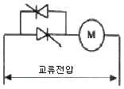
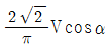
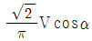
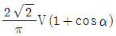
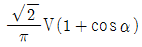
(정답률: 5%)
72. 3상 유도전동기의 속도를 제어하는 방법으로 옳은 것은?
- 부하를 조정하여 제어한다.
- 극수를 변환하여 제어한다.
- 회전자 자속을 변환하여 제어한다.
- 2차저항을 삽입하여 제어한다.
(정답률: 39%)
73. PI제어동작은 공정제어계의 무엇을 개선하기 위하여 사용되고 있는가?
- 이득
- 속응성
- 안정도
- 정상특성
(정답률: 32%)
74. 무접점 논리회로를 구성할 때 NOR 게이트와 NAND 게이트를 많이 활용하고 있다. 그 이유가 되지 못하는 것은?
- 가격이 낮아진다.
- 진행속도가 빠르다.
- 전력소모가 적다.
- 안전하다.
(정답률: 23%)
75. 리니어 전동기의 장점으로 틀린 것은?
- 구조가 간단하고 신뢰성이 높다
- 기어, 벨트 등 동력변환기구가 필요 없다
- 마찰을 거쳐서 추진력이 얻어진다.
- 원심력에 의한 가속 제한이 없다
(정답률: 22%)
76. 제어계에서 미분요소에 해당하는 것은?
- 한 지점을 가진 지레대에 의하여 변위를 변환한다.
- 전기로에 열을 가하여도 처음에는 열이 올라가지 않는다.
- 직렬의 CR회로에 전압을 가하여 C에 충전전압을 가한다.
- 계단전압에서 임펄스 전압을 얻는다.
(정답률: 35%)
77. 어떤 코일에 흐르는 전류가 0.01초 사이에 일정하게 50A에서 10A로 변할 때 20V의 기전력이 발생하면 자기인덕턴스는 몇 mH인가?
- 5
- 10
- 20
- 40
(정답률: 37%)
78. 부하 변동이 심한 직류분권전동기의 광범위한 속도제어 방식으로 가장 적당한 방법은?
- 직렬저항제어방식
- 이그너방식
- 계자제어방식
- 워드레오너드방식
(정답률: 39%)
79. 그림과 같은 R-L 직렬회로에서 공급전압이 10V일 때 VR 이 8V이면 VL 은 몇 V인가?
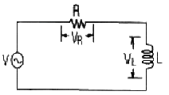
- 2
- 4
- 6
- 8
(정답률: 62%)
80. 그림에서 A점의 전위가 100V, D점의 전위가 60V일 때 BD 사이의 전위차 VBD는 몇 V인가? (단, 저항의 단위는 모두 Ω이다.)
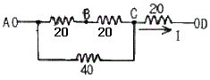
- 10
- 20
- 30
- 40
(정답률: 20%)
5과목: 배관일반
81. 급수배관에서 공기실의 설치목적은?
- 유량조절
- 유속조절
- 부식방지
- 수격작용 방지
(정답률: 55%)
82. 급수 배관 시공 중 옳지 않은 것은?
- 급수지관의 구배는 상향구배로 한다.
- 급수관의 구배는 1/250로 한다.
- 배관 사정상 공기가 모이는 곳에는 공기빼기 밸브를 설치한다.
- 고가 탱크식에서 수평주관은 상향 구배로 한다.
(정답률: 34%)
83. 다음 중 증기난방 설비의 특징과 관계가 먼 것은?
- 증발열을 이용하므로 열의 운반능력이 크다.
- 예열시간이 온수난방에 비해 짧고 증기순환이 빠르다.
- 방열면적을 온수난방보다 적게 할 수 있다.
- 난방의 쾌감도가 온수난방보다 좋다.
(정답률: 55%)
84. 패킹류에서 합성수지제품 중 테프론의 안정 사용온도 범위는?
- -30℃ ~ 140℃
- -100℃ ~ 250℃
- -260℃ ~ 260℃
- -40℃ ~ 120℃
(정답률: 40%)
85. 관의 부식 원인과 현상에 관계가 없는 것은?
- 금속의 이온화에 의한 부식
- 2중의 금속간에 생기는 전류에 의한 부식
- 유체의 화학적 성질에 의한 부식
- 무기물에 의한 부식
(정답률: 54%)
86. 주철관의 플랜지 접합시 사용되는 패킹제로 적합하지 않는 것은?
- 고무
- 석면
- 아마존
- 합성수지
(정답률: 25%)
87. 저온 열교환기용 강관의 KS기호는?
- STBH
- STHA
- SPLT
- STLT
(정답률: 46%)
88. 관이음 도시기호 중 유니온 이음은?
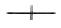
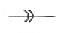
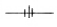
(정답률: 42%)
89. 다음 중 강관 접합법에 속하지 않는 것은?
- 나사접합
- 플랜지 접합
- 용접접합
- 코킹접합
(정답률: 48%)
90. 트랩의 봉수가 없어지는 원인이 아닌 것은?
- 흡출작용
- 모세관 현상
- 과잉 온도차
- 자기 사이폰 작용
(정답률: 40%)
91. 팽창탱크는 최고층 급탕기구보다 얼마 이상 높은 것이 바람직한가?
- 3m 이상
- 5m 이상
- 7m 이상
- 9m 이상
(정답률: 43%)
92. 급탕설비의 배관에 대한 설명 중 부적당한 것은?
- 급탕관은 급수관보다 부식이 심하므로 방식에 대한 대책을 필요로 한다.
- 공기가 정체하기 쉽기 때문에 직선배관보다는 굴곡배관이 좋다.
- 공기빼기 밸브로는 공기의 체류를 작게 하는 게이트 밸브가 적당하다.
- 보통 30 ~ 40m 마다. 1개소씩 신축이음을 만들어 주어야 한다.
(정답률: 60%)
93. 길이 30mm의 직관의 온도 변화가 120℃ 일 때 강관에 대한 열팽창량은? (단, 강의 열팽창계수는 11.9×10-6mm/mm ℃)
- 42.8mm
- 42.8cm
- 42.8m
- 4.28mm
(정답률: 30%)
94. 트랩의 구비조건이 아닌 것은?
- 재료의 내식성이 풍부할 것
- 구조가 복잡할 것
- 봉수가 유실되지 않는 구조일 것
- 트랩자신이 세정작용을 할 수 있을 것
(정답률: 64%)
95. 다음 증기난방 배관 방식중 잘못된 환수방식은?
- 기계환수식
- 하트포드환수식
- 중력환수식
- 진공환수식
(정답률: 60%)
96. 온수난방 배관에서 역귀환(reverse return)방식을 채택하는 이유로 옳은 것은?
- 배관의 신축을 흡수하기 위하여
- 각 방열기의 방열량을 균등하게 하기 위하여
- 배관 부식을 방지하기 위하여
- 배관 길이를 짧게 하기 위하여
(정답률: 60%)
97. 관의 표시설명이 틀린 것은?
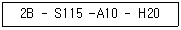
- S115 - 유체의 종류, 상태
- 2B - 관의 길이
- A10 – 배관계의 시방
- H20 - 관의 외면에 실시하는 설비, 재료
(정답률: 43%)
98. 다음은 고층건물의 급수배관법에서 특별히 고려하여야 할 사항이다. 틀린 것은?
- 고층부에 고가탱크가 설치되는 관계상 건축 구조물의 설계에 신중을 기해야 한다.
- 온도변화에 따른 팽창 이음을 적절히 설치하여야 한다.
- 배관이음에 누설방지 대책이 강구되어야 한다.
- 급수압은 보통건물과 같은 정도로 한다.
(정답률: 62%)
99. 급수탱크 부속설비 중에서 압력탱크 부속품에 속하지 않는 것은?
- 압력계
- 수면계
- 안전밸브
- 보울탭
(정답률: 46%)
100. 최고 사용 압력 P = 76kg/cm2 의 배관에 SPPS- 38을 사용하는 경우 스케줄 번호는 얼마인가? (단, 인장강도는 38kg/mm2이고 안전율은 4이다.)
- 25
- 68
- 80
- 102
(정답률: 44%)
(447 - 15) / 447 = 60 / 100
따라서, 고열원의 온도는 447℃이다.